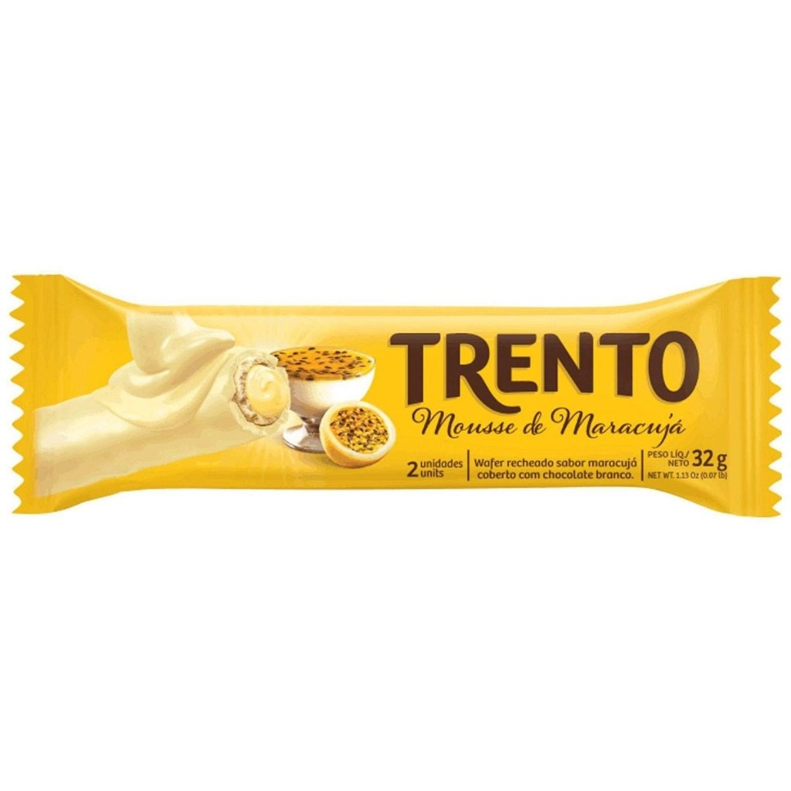
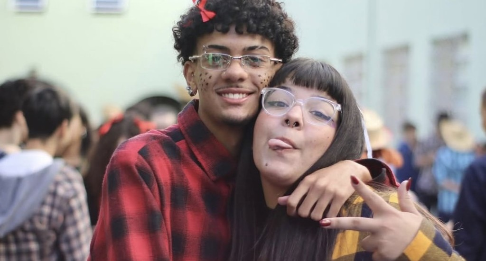
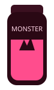
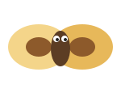
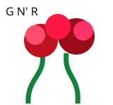
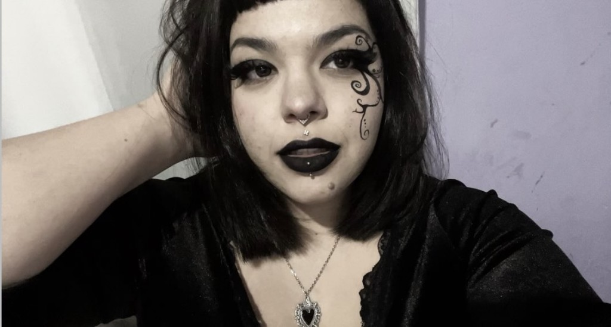
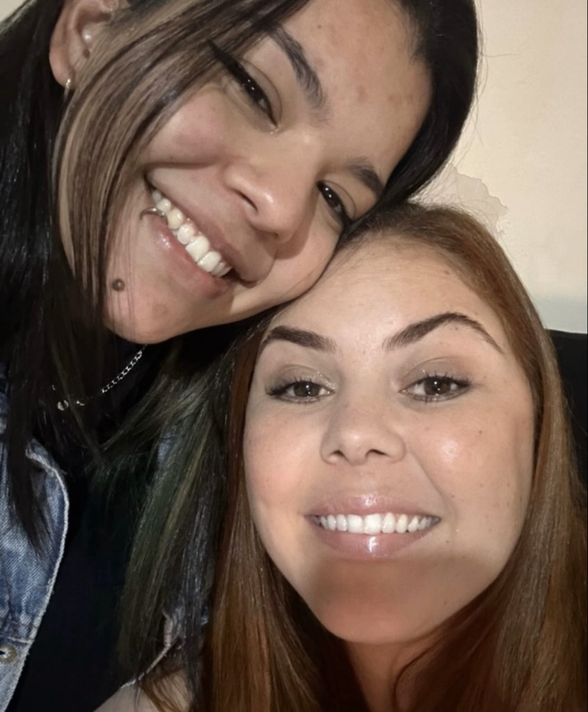
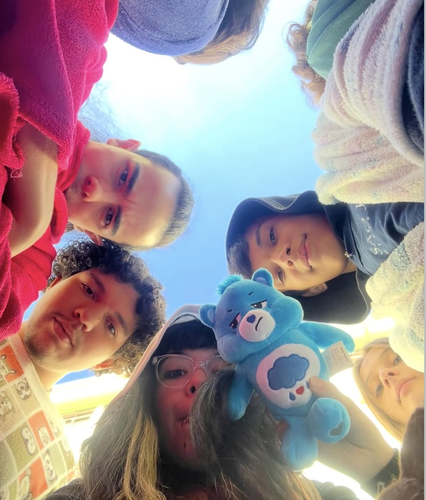
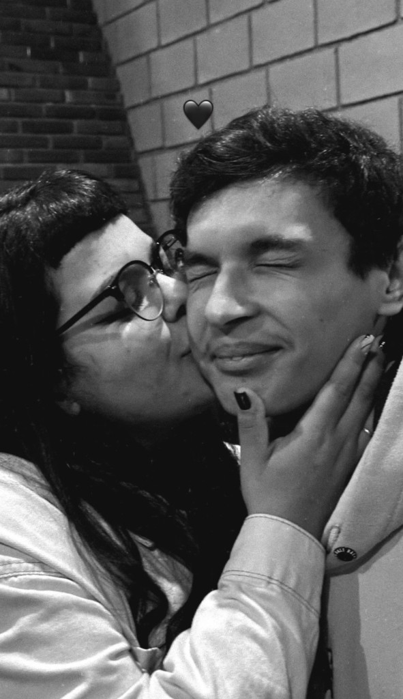
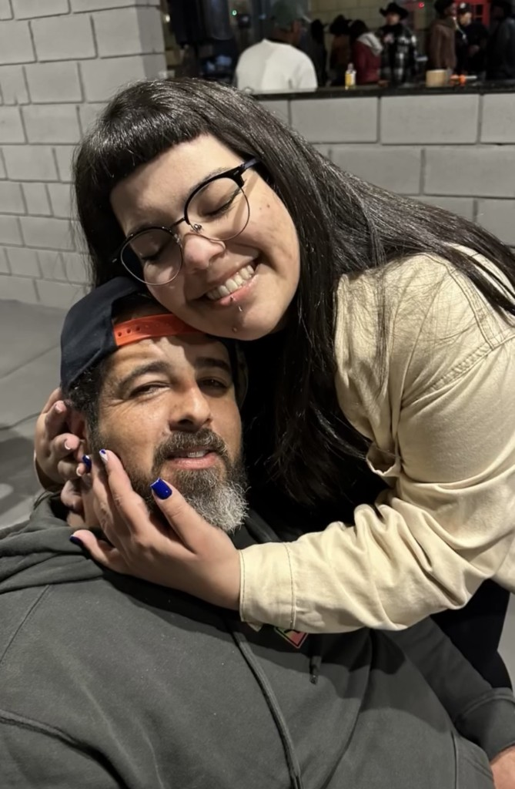

Aniversário oficial · edição vinte
20
Gabi faz 20 anos
Gabiroba Simasturbo
Vinte anos da prima que a gente ama. Hoje, ontem, e daqui a mais vinte.



Um recado do primo
Parabéns pelos seus 20 anos, Gabi
Gabi, você está fazendo 20 anos. Não é “quase adulta”. Não é “já tem uns dezenove”. É vinte. Duas décadas de Gabiroba Simasturbo neste planeta — e a gente ainda não se recuperou da primeira.
A gente te ama. Eu te amo. 20 anos pedem festa, Trento, Monster e a família inteira na foto: Pudimzinha, Big Smoke, Conguitos e o primo que montou esse site de madrugada.
Que essa década venha leve: Guns N’ Roses no volume, The Last of Us no talo e Gabiroba Simasturbo no documento oficial. Parabéns, Gabi.
Feliz 20 anos, Gabiroba.
Com amor, o primo.

A aniversariante
Vinte anos de cara de quem manda no recado
Essa é a Gabi aos 20: franja, batom, piercing e a certeza de que Gabiroba Simasturbo não é apelido — é patente.


A Pudimzinha
Pudimzinha e a filha de 20 anos
Olha essa foto: a Gabi em cima, cabelo preto, sorriso aberto, e a Pudimzinha embaixo, cabelo mais clarinho, colada na filha. Duas de um jeito só.
Gabi, seus 20 anos têm o carinho dela do lado. A Pudimzinha te ama. A gente te ama. Família fofa, edição cartoon, com direito a pudim no apelido.

A turma + o ursinho
20 anos pedem foto no chão olhando o céu
A Gabi no meio, a galera em volta, o céu aberto e um ursinho triste de plantão. Ele não entendeu a festa. A turma entendeu: são os 20 anos dela, e tem gente demais nessa roda.
O namorado
Conguitos também está na festa dos 20
Esse beijo em preto e branco é deles. Que os 20 anos da Gabi tenham esse carinho pertinho.
Bem-vindo à bagunça, Conguitos. Cuida bem dela — a família torce pelos dois.


O pai
Big Smoke, o original
Big Smoke no posto de sempre: boné, barba e a filha de 20 anos pendurada no pescoço.
Os 20 anos dela também são dele.
20
Feliz 20 anos, Gabi.
Gabiroba Simasturbo, a gente ama você. Que essa festa seja só o começo de uma década boa — com a família inteira em volta.
Com amor,
o primo.